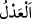

yanına gelince başını kaldırıp yüzüne bile bakmadı. Sonra şu beyitleri yazarak ona
gönderdi:
Ey ilmi kendisine tazı yapan,
Onunla da fakirlerin mallarını avlayan,
Dünya ve lezzetleri uğruna
Dini elden çıkaran bir hile kurdun.
Daha önce mecnunlar için deva iken,
Şimdi dünya için kendine deli divane oldun.
Sultanların kapısını terk hususunda
Diline destan ettiğin sözler nerde kaldı?
“Bu işe zorla getirildim.” desen de boşunadır
İlmin eşeği artık çamura battı.
İsmâil b. Uleyye bu beyitleri duyunca hemen halife Harun Reşid’e gitti ve kadılıktan
istifasını kabul edinceye kadar yanından ayrılmadı. Sonunda o da istifasını kabul etti.
Şu şiir ne kadar güzeldir:
Ebû Hanîfe kadılığı kabul etmedi ve öldü
Sen ise kadı olmazsan ölürsün
Yine bir şiirde şöyle denilmiştir:
Âdil ol, zamanın bütün bela ve musibetlerinden mahfuz olursun.
Zira bela, Hz.Ömer (r.a.) gibi adaletli birisi için imkansızdır.
“__WORD__”, Allah Teâlâ’nın isimlerinden biridir ve “âdil” mânâsına gelir. Âdil ise zulüm
ve cevrin zıddı olan adalet fiilinin kendisinden sâdır olan kimsedir. Adaletle davrandığı
bilinmeyen kimsenin âdil olduğu ve fiilleri bilinmeyen kimsenin de adaletle davrandığı
aslâ bilinemez.
Kulun, Allah Teâlâ’nın “el-Adl” isminden nasîbi gayet açıktır. Kul önce kendine karşı
âdil olmalı. Bunun da ilk şartı şehvet ve öfkeyi, aklın ve dinin emrine boyun
eğdirmektir. Aklı, şehvet ve öfkenin hizmetçisi kılarsa nefsine zulmetmiş olur. İşte bu,
kişinin kendine yapması gereken adaletin özüdür. Bunun tafsilatı ise şeriatin bütün emir
ve yasaklarına riayet etmektir. İnsanın uzuvları hakkındaki adâleti, her uzvu şeriatın izin
verdiği şekilde kullanmasıdır. Kişinin ailesi, idâresi altındakiler ve sahip olduğu şeyler
hakkında âdil davranması gerektiği de açıktır.
Zulmün eziyet etmek, adlin ise insanlara faydalı olmak olduğu zannedilebilir. Halbuki
öyle değildir. Mesela bir melik, içerisinde silahlar, kitaplar ve türlü türlü mallar
bulunan hazinelerini açıp malları zenginlere, silahları âlimlere verip kaleyi onlara
teslim etse ve kitapları da askerlere ve savaşanlara bırakıp mescid ve medreseleri